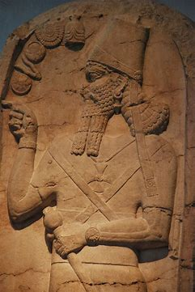

Rey Shamshi Adad
 Shamshi-Adad I fue un rey de Asiria que jugó un papel clave en la expansión del reino y la consolidación de su poder. Se le considera uno de los primeros grandes gobernantes asirios y un precursor del Imperio Asirio.
- Orígenes: Era hijo de Ila-Kabkabi, un caudillo amorreo. Antes de convertirse en rey de Asiria, tuvo que huir a Babilonia debido a conflictos con otros reinos.
- Conquista de Asiria: Tras recuperar el control de Ekallatum, Shamshi-Adad I expulsó al rey Erishum II y tomó el trono de Asiria, estableciendo su dominio sobre la región.
- Expansión territorial: Aprovechó una revuelta en Mari para anexar la ciudad, consolidando su control sobre Mesopotamia septentrional.
- Influencia babilónica: Adoptó títulos como "Rey de Akkad", reflejando su ambición de seguir el modelo de Sargón de Acad.
Shamshi-Adad I organizó su reino en provincias bien administradas y fortaleció su ejército. También estableció alianzas estratégicas y expandió la influencia asiria en la región. Fue sucedido por su hijo Ishme-Dagan I, quien continuó su legado.